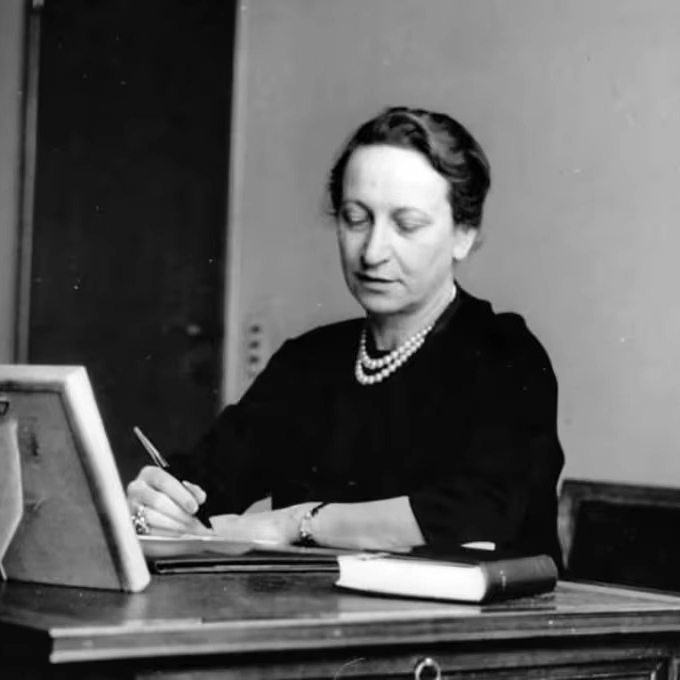
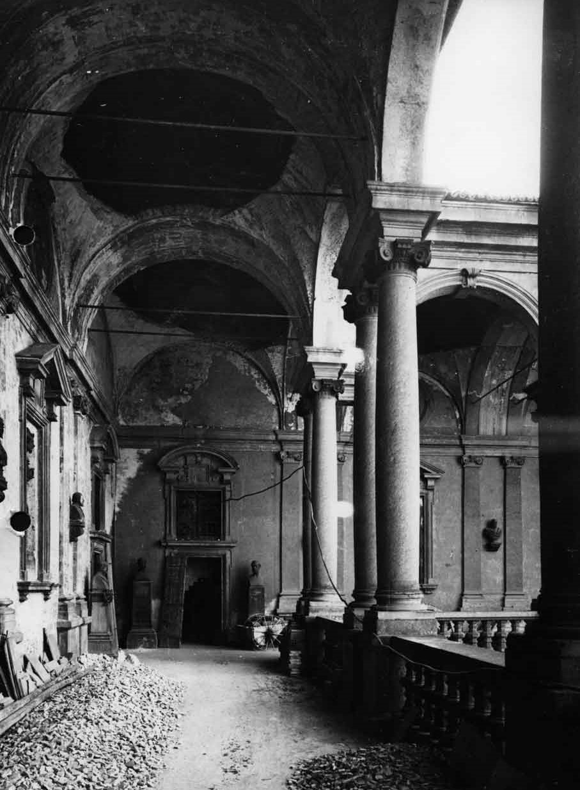
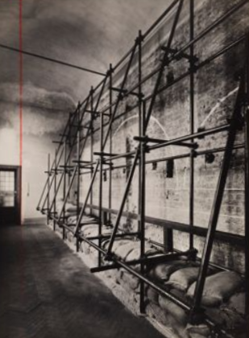

Fernanda Wittgens (Milano, 1903 - 1957)
FERNANDA WITTGENS E LA PINACOTECA DI BRERA
Fernanda WittgensVIAF divenne direttrice della Pinacoteca di Brera nell’agosto del 1940. Ebbe un ruolo fondamentale nella protezione del patrimonio culturale milanese e lombardo, mettendo in sicurezza non solo le opere poste sotto la sua responsabilità, ma anche quelle provenienti da diversi musei del territorio circostante: tra questi possiamo citare il Museo Poldi Pezzoli, la Pinacoteca Ambrosiana, il Castello Sforzesco, l’Ospedale Maggiore, il Museo Teatrale alla Scala, l’Accademia Carrara di Bergamo e la Pinacoteca Tosio Martinengo di Brescia1.
Le operazioni cominciarono all’indomani dell’entrata in guerra dell’Italia, con lo sgombero delle opere indicate come “illustri” nella documentazione redatta dalla direttrice e il loro trasporto alla Villa Marini – Clarelli, a Montefreddo, nei pressi di Perugia. Le 32 casse arrivarono a destinazione il 18 giugno 1940 e furono consegnate al soprintendente Achille Bertini Calosso. Altri rifugi furono individuati nei sotterranei della Cassa di Risparmio e del Castello Sforzesco, dove le opere rimasero per poco più di un anno: l’eccessiva umidità di questi spazi non permetteva la corretta conservazione dei manufatti, che furono successivamente spostati2.
Il 17 settembre 1941 si decise di spostare le opere in nuovi rifugi verso sud e il trasferimento proseguirà fino all’estate del 1943. Alcune opere vennero trasferite da Montefreddo a Villa Il Corniolo, nei pressi di Orvieto, mentre altre al Palazzo dei Principi di Carpegna. Qui arrivarono 87 casse, poste sotto la protezione di Pasquale Rotondi, che da Urbino stava coordinando il salvataggio di opere provenienti da diverse regioni d’Italia. Wittgens viaggiò costantemente, accompagnando di persona i convogli, ma non senza difficoltà: i mezzi scarseggiavano, il personale maschile era chiamato al fronte e la direttrice, in quanto donna, necessitava di speciali autorizzazioni della Prefettura3. Nel frattempo Milano veniva bombardata e numerosi edifici storici ne subivano le conseguenze: l’8 agosto 1943 Brera venne gravemente danneggiata, 26 delle 34 sale erano distrutte; il 13 agosto dello stesso anno veniva colpita Santa Maria delle Grazie, dove il muro del Cenacolo si salvò grazie a una protezione di armature tubolari e sacchi di sabbia4.
In seguito all’armistizio dell’8 settembre 1943 e all’aggravarsi della situazione, l’Italia centrale, attraversata dalla Linea Gotica, e il territorio bresciano, sede della Repubblica di Salò, diventarono zone troppo pericolose: bisognava trovare altri rifugi e dal 1944 fino alla Liberazione la Soprintendenza milanese si occupò di repentini spostamenti in più di venti ricoveri, alla ricerca di luoghi sempre più sicuri5.
L’impegno di Wittgens non si limitò alla tutela dei beni culturali. Era infatti un’antifascista convinta e svolgeva attività clandestina: organizzava espatri di perseguitati ed ebrei, collaborando con associazioni benefiche e gruppi partigiani. Per questo, venne arrestata il 14 luglio 1944 e reclusa nel carcere di San Vittore. Liberata il 24 aprile 1945, nel giugno dello stesso anno fu nominata commissario straordinario dell’Accademia di Belle Arti di Brera dal Comando Alleato. Mantenne la carica fino al 31 marzo dell’anno seguente, quando riottenne il ruolo di direttrice di Brera6.
1. Arrigoni 2007, p. 651.
2. Ginex 2023, pp. 214 - 215.
3. Ivi, pp. 215 - 218.
4. Ivi, p. 219.
5. Ginex 2023, p. 222.
6. Arrigoni 2007, pp. 651 - 652.



Scheda prosopografica
Nel 1922 concluse gli studi liceali. Frequentò l’Accademia Scientifica e Letteraria di Milano e nel 1925 si laureò con Paolo D’Ancona presso la Reale Università di Milano.
Nel 1928 fu assunta come salariata temporanea presso l’ufficio della Soprintendenza all’Arte Medievale e Moderna delle Province Lombarde. Nell’agosto del 1933, dopo aver vinto un concorso, fu nominata ispettrice aggiunta. Nel 1940 divenne direttrice della Pinacoteca di Brera. Nel 1950 divenne soprintendente alle Gallerie.
All’inizio della guerra, W. si occupò della raccolta e del trasporto di opere d’arte del territorio lombardo verso diversi rifugi. Inizialmente venne scelta la Villa Marini – Clarelli, a Montefreddo, nei pressi di Perugia e successivamente il Palazzo dei Principi di Carpegna. Dopo l’armistizio e fino alla Liberazione, la Soprintendenza milanese si occupò di repentini spostamenti in più di venti ricoveri, alla ricerca di luoghi sempre più sicuri. Fu obbligata ad iscriversi al partito fascista perché dipendente dello Stato, ma svolgeva attività clandestina: organizzava espatri di perseguitati ed ebrei, collaborando con associazioni benefiche e gruppi partigiani. Quando questa attività fu scoperta, W. venne arrestata e incarcerata con altre quattro donne presso il carcere di San Vittore. Liberata il 24 aprile 1945, nel giugno dello stesso anno fu nominata Commissario straordinario della Accademia di Belle Arti di Brera dal Comando Alleato e fu presidente della Fondazione Poldi Pezzoli fino al 27 marzo 1946.
Negli anni del dopoguerra si occupò della ricostruzione dei musei milanesi, distrutti durante i bombardamenti del 1943. Per la ricostruzione della Pinacoteca, W. si affidò all’architetto Piero Portalupi, affiancato da Franco Albini. Brera riaprì al pubblico il 9 giugno 1950 e negli anni successivi la direttrice organizzò diverse attività didattiche ed iniziative inedite per un pubblico vasto, in linea con la sua concezione di “museo vivente”. Tra il 1947 e il 1954, W. diresse il restauro del Cenacolo di Leonardo, realizzato da Mauro Pelliccioli. Nel 1952 fu protagonista dell’acquisto della Pietà Rondanini. Negli anni ’50 si occupò di promozione culturale e di rilanciare l’arte italiana a livello internazionale, curando mostre non solo in Italia ma anche in altre città europee. Nel gennaio del 1954 partecipò al Congresso di Museografia, invitata dal Metropolitan Museum of Art di New York per parlare della ricostruzione dei musei italiani nel dopoguerra.
Medaglia d’Oro del Comune di Milano; Medaglia del Presidente della Repubblica per Benemerenze nella Cultura e nell’Arte; Cavaliere Ufficiale della Repubblica Italiana.
Fernanda Wittgens ad vocem DBSSA 2007 pp. 655 – 656.
Per un elenco esaustivo degli archivi consultabili si faccia riferimento a Ginex 2018, p. 141
2007, Luisa Arrigoni, Fernanda Wittgens, in Dizionario biografico dei Soprintendenti Storici dell’Arte (1904-1974), Bononia University Press, Bologna, pp. 647 – 657; 2015, Erica Bernardi, «Franco Russoli - Fernanda Wittgens: le prime lettere tra Pisa, Milano e Parigi», Concorso. Arti e lettere, n. VI, 2012/14, pp. 52 – 63; 2015, Maria Cecilia Cavallone, «Fernanda Wittgens - Clara Valenti: tra impegno politico e storia dell’arte», Concorso. Arti e lettere, n. VI, 2012/14, pp. 30 – 51; 2018, Giovanna Ginex, "Sono Fernanda Wittgens": una vita per Brera, Skira, Milano; 2019, Francesco Martelli, «Il falso mito del primo fundraising: l’acquisto della "Pietà Rondanini"», Art e dossier, n. 364, pp. 58 – 61; 2020, Giovanna Ginex, Rosangela Percoco, L’allodola, Salani Editore, Firenze; 2021, Ilaria De Palma, La parola all’accusato: un nuovo punto di vista sull’epurazione di Giorgio Nicodemi dai Musei Civici di Milano, Area Soprintendenza Castello, Milano; 2022, Silvia Cecchini, Sul Cenacolo di Leonardo: il restauro italiano attraverso il confronto Brandi-Wittgens-Pellicioli, in Silvia Cecchini, Maria Beatrice Failla, Federica Giacomini, Chiara Piva (a cura di) Mavro Pellicioli e la cvltvra del restavro nel XX secolo (atti del convegno internazionale di studi: Venezia, Gallerie dell’Accademia, 14 novembre 2018; Venezia, Palazzo Ducale, 15 novembre 2018), Sagep editori, Genova, pp. 91 – 108; 2022, Federica Nurchis, Fernanda Wittgens, Guido Gregorietti e il sogno di una scuola del restauro a Milano, in Silvia Cecchini, Maria Beatrice Failla, Federica Giacomini, Chiara Piva (a cura di) Mavro Pellicioli e la cvltvra del restavro nel XX secolo (atti del convegno internazionale di studi: Venezia, Gallerie dell’Accademia, 14 novembre 2018; Venezia, Palazzo Ducale, 15 novembre 2018), Sagep editori, Genova, pp. 269 – 281; 2023, Giovanna Ginex, Fernanda Wittgens a Milano, in Luigi Gallo, Raffaella Morselli (a cura di) Arte liberata. Capolavori salvati dalla guerra 1937-1947, catalogo della mostra (Roma, Scuderie del Quirinale, 16 dicembre 2022 – 10 aprile 2023), Electa, Milano, pp. 210 – 225.
Chora Media, Paladine. Puntata 2: Fernanda Wittgens